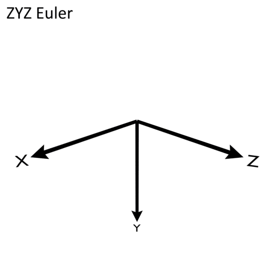

CyRSoXS Simulation Components#
Cy-RSoXS is a voxel-based forward-scattering simulator calculated in the Born Approximation. This page describes the required files and file structure for use with CyRSoXS.
- Morphology file
.hdf5 format
- Material optical constant files
Material1.txt, Material2.txt, Material3.txt, etc.
- Configuration file
config.txt
Morphology File Structure#
Cy-RSoXS accepts two different types of morphologies: Vector and Euler. A vector morphology will use a vector to assign the direction and amount of alignment in each voxel for each material. A Euler morphology will use a set of Euler angles to assign the direction of alignment. A separate S parameter is used to denote the amount of alignment in each voxel for each material.
The two structures below assume a morphology of size [1, 256, 256] where the dimensions are [Z, Y, X], and two materials in the morphology.
Vector Morphology HDF5 Structure#
NOTE: The Vector Morphology type is included for legacy support and may be deprecated in future releases. Use of the Euler Morphology type is strongly recommended.
Vector_Morphology/
Mat_1_alignment/
data = alignment vector array of shape [1, 256, 256, 3] and order [Z, Y, X, (XYZ)]
dims = ['Z', 'Y', 'X']
Mat_1_unaligned/
data = volume fraction array of shape [1, 256, 256] and order [Z, Y, X]
dims = ['Z', 'Y', 'X']
Mat_2_alignment/
data = alignment vector array of shape [1, 256, 256, 3] and order [Z, Y, X, (XYZ)]
dims = ['Z', 'Y', 'X']
Mat_2_unaligned/
data = volume fraction array of shape [1, 256, 256] and order [Z, Y, X]
dims = ['Z', 'Y', 'X']
Morphology_Parameters/
*required*
PhysSize/
data = size of each voxel edge in nanometers
NumMaterial/
data = number of materials in morphology (integer)
*optional*
creation_date/
data = date and time
film_normal/
data = [Z, Y, X] vector denoting the film normal direction
morphology_creator/
data = author of the morphology
name/
data = name of morphology
Euler Morphology HDF5 Structure#
The Euler Morphology uses a ZYZ convention. Currently, Cy-RSoXS only supports uniaxial materials and the first Euler rotation (Phi) is unused. Theta is the rotation around the Y axis. Psi is the last rotation around the Z axis.
Euler_Angles/
Mat_1_Vfrac/
data = Rotation angle array of shape [1, 256, 256] and order [Z, Y, X]
dims = ['Z', 'Y', 'X']
Mat_1_S/
data = alignment magnitude array of shape [1, 256, 256] and order [Z, Y, X]
dims = ['Z', 'Y', 'X']
Mat_1_Theta/
data = Rotation angle array of shape [1, 256, 256] and order [Z, Y, X]
dims = ['Z', 'Y', 'X']
Mat_1_Psi/
data = Rotation angle array of shape [1, 256, 256] and order [Z, Y, X]
dims = ['Z', 'Y', 'X']
Mat_2_Vfrac/
data = Rotation angle array of shape [1, 256, 256] and order [Z, Y, X]
dims = ['Z', 'Y', 'X']
Mat_2_S/
data = alignment magnitude array of shape [1, 256, 256] and order [Z, Y, X]
dims = ['Z', 'Y', 'X']
Mat_2_Theta/
data = Rotation angle array of shape [1, 256, 256] and order [Z, Y, X]
dims = ['Z', 'Y', 'X']
Mat_2_Psi/
data = Rotation angle array of shape [1, 256, 256] and order [Z, Y, X]
dims = ['Z', 'Y', 'X']
Morphology Parameters/
*required*
PhysSize/
data = size of each voxel edge in nanometers
NumMaterial/
data = number of materials in morphology (integer)
*optional*
creation_date/
data = date and time
film_normal/
data = [Z, Y, X] vector denoting the film normal direction
morphology_creator/
data = author of the morphology
name/
data = name of morphology
Material Optical Constant File Structure#
CyRSoXS currently supports uniaxial optical constants. In tensor form, this can be represented as:
where \(n = 1 - \delta + i\beta\). Para is the extraordinary (unique) axis, and perp is the ordinary (degenerate) axis.
For each material in the simulation, we need a corresponding MaterialX.txt file. This file contains the optical constants at each energy for the extraordinary (Para) and ordinary (Perp) axes of the uniaxial dielectric function.
EnergyData0:
{
Energy = 275.0;
BetaPara = 6.388392448251455e-05;
BetaPerp = 6.303899730113871e-05;
DeltaPara = 0.0010635346640931634;
DeltaPerp = 0.0011221433414215483;
}
EnergyData1:
{
Energy = 275.1;
BetaPara = 6.309144102259152e-05;
BetaPerp = 6.304376809350212e-05;
DeltaPara = 0.0010567115883113286;
DeltaPerp = 0.0011157664852560843;
}
.
.
.
EnergyData249:
{
Energy = 299.9;
BetaPara = 0.0024365306249853557;
BetaPerp = 0.0025455166691934236;
DeltaPara = 0.0017547293997892883;
DeltaPerp = 0.001774225207859871;
}
Configuration File Structure#
The config.txt file has a number of options, where each option is written to a separate line in the file:
Energies = [275.0, 275.1, ..., 299.9];
CaseType = 0
EAngleRotation = [0.0, 1.0, 360.0];
MorphologyType = 0
Table of Configuration File Options#
Option |
Required |
Default |
Comment |
|---|---|---|---|
CaseType |
Yes |
- |
|
Energies |
Yes |
- |
|
EAngleRotation |
Yes |
- |
|
MorphologyType |
Yes |
- |
|
listKVectors |
No |
[0, 0, 1] |
Required for CaseType = 1, 2 |
DetectorCoordinates |
No |
[0, 0, 1] |
Required for CaseType = 2 |
NumThreads |
No |
4 |
|
AlgorithmType |
No |
0 |
|
DumpMorphology |
No |
False |
|
ScatterApproach |
No |
0 |
|
WindowingType |
No |
0 |
|
RotMask |
No |
False |
|
EwaldsInterpolation |
No |
False |
Configuration File Option Descriptions#
- CaseType
The scattering configuration
0 : Default configuration. fixed \(\vec k = (0, 0, 1)\) and dectector normal of \(\vec n = (0, 0, 1)\).
1 : Beam Divergence. Supports arbitrary \(\vec k\), but fixed detector normal of \(\vec n = (0, 0, 1)\).
2 : Grazing Incidence. Supports arbitrary \(\vec k\) and \(\vec n\). Currently untested
Input datatype: integer
Example:
CaseType = 1;
- Energies
The list of energies to simulate
Input datatype : Real double/float values
Example:
Energies = [270.0, 271.0, 272.0];
- EAngleRotation
The rotation angle in degrees for the x-ray beam’s \(\vec E\) polarization
List of 3 values in order of \([Start, Increment, End]\).
Default \(\vec E = (1, 0, 0)\). Rotation is counter-clockwise.
Input datatype : Real double/float
Example:
EAngleRotation = [0.0, 1.0, 360.0];
- MorphologyType
Vector or Euler Morphology
0 : Euler Morphology
1 : Vector Morphology
Input datatype: integer
Example:
MorphologyType = 0;
- listKVectors
The list of \(\vec k\) vectors
Specific to CaseType = 1, 2
\(\vec k\) vectors are arranged in groups.
Input datatype: Real double/float
Example:
listKVectors = {k0={k=[0.0, 0.0, 1.0]}, k1={k=[0.5, 0.5, 1.0]}};
- DetectorCoordinates
Determines the detector geometry by setting the detector’s vector normal
Specific to CaseType = 2
List of 3 values in the order \([x, y, z]\). Default is \(\vec n = (0, 0, 1)\)
Input datatype: Real double/float
Example:
DetectorCoordinates = [0.0, 0.0, 1.0];
- NumThreads
number of OpenMP threads
Default value = 4
Must be \(\geq\) number of GPUs
To set in hardware, run in bash
export OMP_NUM_THREADS=4for 4 OpenMP threadsExample:
NumThreads = 4;
- AlgorithmType
Selects the type of algorithm used by CyRSoXS
0 : Communication minimizing algorithm
1 : Memory minimizing algorithm
Default values = 0
Input datatype: integer
Example:
AlgorithmType = 0;
- DumpMorphology
Writes the morphology as seen by CyRSoXS, after any necessary conversions are performed. Useful for double checking morphology construction
Writes to XMDF and HDF5 files. The XMDF file can be loaded in Paraview/Visit for 3D visualization. The native CyRSoXS visualizer is Paraview or Visit. Use of other tools is up to the discretion of the user.
Default value = False
Input datatype : Boolean string
Example:
DumpMorphology = True;
- ScatterApproach
Option to explicitly calculate the differential scattering cross-section before the Ewald Sphere Projection
0 : Do not compute
1 : Compute
Example:
ScatterApproach = 0;
- WindowingType
Type of windowing for the FFT
0 : None
1 : Hanning
Default value = 0
Input datatype : integer
Example:
WindowingType = 0;
- EwaldsInterpolation
Type of interpolation onto the Ewald Sphere
0 : Nearest neighbor
1 : Trilinear interpolation
Default value = 1
Example:
EwaldsInterpolation = 1;